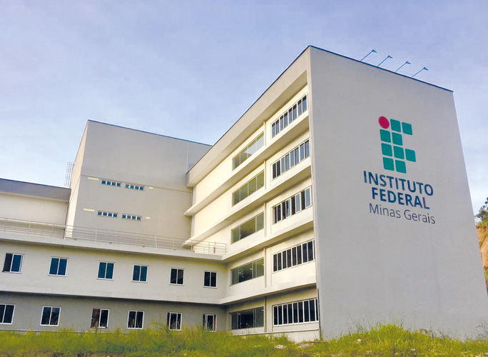

Um pouco sobre mim
Detalhes:
Meu nome é Fábio Augusto Araújo Santos
Tenho 19 anos, nasci dia 19/11/2002
Citação favorita:
É que, eu levo as coisas um pouco a sério demais e odeio quando elas ficam todas iguais
- Wifi | Nill
Redes sociais:
Onde estudo:

Atualmente estudo no
Instituto Federal de Educação Ciência e Tecnologia de Minas Gerais - Campus Sabará
.
Participo do curso de Sistemas de informação e atualmente estou no terceiro período.
Disciplinas já cursadas em BSI:
- Primeiro período
- Matemática Discreta
- Fundamentos de Sistemas de Informação
- Fundamentos de Matemática
- Fundamentos de Administração
- Metodologia de Pesquisa
- Matemática Discreta
- Segundo período
- Cálculo Diferencial e Integral I
- Teoria de Linguagens
- Introdução a Sistemas Digitais
- Programação II
- Redes de Computadores I
- Contabilidade Básica
- Informática e sociedade
- Terceiro período - Cursando
- Programação III
- Geometria Analítica e Álgebra Linear
- Fundamentos de Economia
- Redes de Computadores II
- Programação Web I
- Segurança e Auditoria de Sistemas